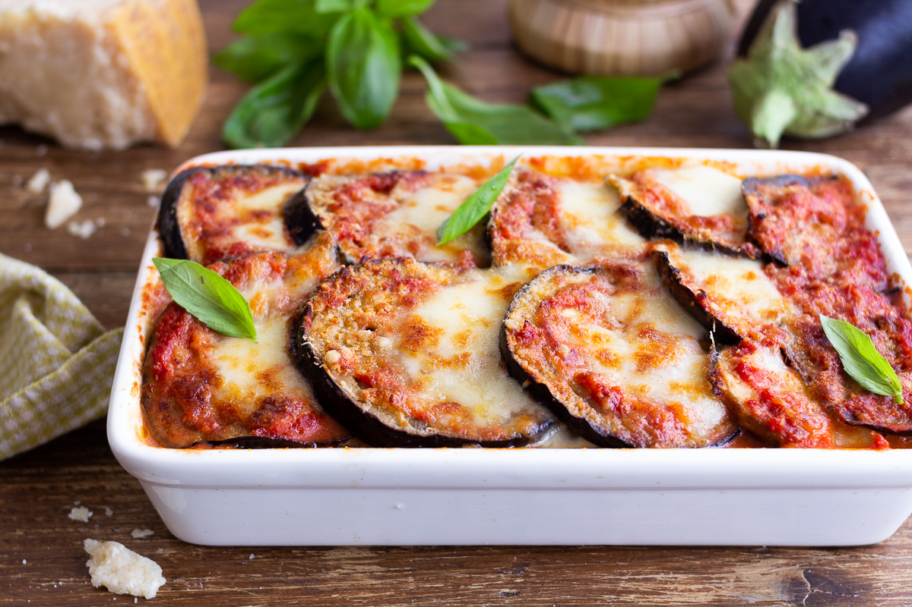

Melanzane alla parmigiana

Descrizione:
La parmigiana di melanzane è un piatto a base di
melanzane fritte e gratinate in forno con passata di pomodoro, basilico, aglio e formaggio.
Ingredienti:
- Melanzane ovali nere
- Fiordilatte
- Cipolle dorate 1
- Olio extravergine d'oliva q.b.
- Sale fino q.b.
- Passata di pomodoro 1 kg
- Parmigiano Reggiano DOP (da grattugiare) 150 g
- Basilico q.b.
- Pepe nero q.b.
Passaggi:
- Pulite e tritate la cipolla,versatela in un tegame dove avrete scaldato l'olio.
Unite la passata di pomodoro, regolate di sale e aggiungete le foglie di basilico.
Quindi lasciate cuocere a fuoco dolce per 45-50 minuti
- Nel frattempo tagliate a cubetti il fiordilatte tenendone da parte un pezzo che servirà alla fine.
- Affettate per il senso della lunghezza ottenendo delle fette spesse di 4-5 mm 10.
Quando avrete finito friggete le melanzane in olio già caldo 170°
immergendo pochi pezzi alla volta, non appena saranno leggermente dorate scolate su vassoio con carta assorbente.
Quando sul vassoio sarà finito lo spazio mettete altra carta assorbente e mettete a scolare le altre melanzane fritte.
In ultimo passate alla composizione,iniziate versando un po’ di sugo in una pirofila.
- Ornate il primo strato disponendo le fette di melanzane,versate il sugo di pomodoro,spalmatelo e distribuite dei cubetti di fiordilatte.
Spolverizzate con il Parmigiano grattugiato e delle foglie di basilico.
Ricominciate aggiungendo il sugo di pomodoro e le melanzane,che andranno adagiate in senso contrario.
- Andate avanti così fino ad arrivare all'ultimo strato di melanzane e che andrete a condire,
ancora una volta con sugo e il fiordilatte che avete tenuto da parte, da spezzettare a mano.
- Finite con il Parmigiano grattugiato e infornate in forno statico, già caldo a 200°, per circa 30 minuti.
Trascorso il tempo di cottura lasciate riposare per 15-20 minuti prima di servire la vostra parmigiana di melanzane.